폐기물처리기사 (2021-03-07 기출문제)
1과목: 폐기물 개론
1. Eddy Current Separator는 물질 특성상 세종류로 분리한다. 이 때 구리전선과 같은 종류로 선별되는 것은?
- 은수저
- 철나사못
- PVC
- 희토류 자석
(정답률: 76%)

2. 사업장에서 배출되는 폐기물을 감량화 시키기 위한 대책으로 가장 거리가 먼 것은?
- 원료의 대체
- 공정 개선
- 제품내구성 증대
- 포장횟수의 확대 및 장려
(정답률: 90%)
3. 압축기에 쓰레기를 넣고 압축시킨 결과 압축비가 5였을 때 부피감소율(%)은?
- 50
- 60
- 80
- 90
(정답률: 77%)
4. 적환장의 설치 작용 이유로 가장 거리가 먼 것은?
- 저밀도 거주지역이 존재할 경우
- 불법투기와 다량의 어지러진 쓰레기들이 발생할 때
- 부패성 폐기물 다량 발생지역이 있는 경우
- 처분지가 수집 장소로부터 16km 이상 멀리 떨어져 있는 경우
(정답률: 80%)
5. 폐기물 수거노선의 설정요령으로 적합하지 않은 것은?
- 수거지점과 수거빈도를 결정하는데 기존 정책이나 규정을 참고한다.
- 간선도로부근에서 시작하고 끝나도록 배치한다.
- 반복운행을 피하도록 한다.
- 반 시계방향으로 수거노선을 설정한다.
(정답률: 87%)
6. 습량기준 회분량이 16%인 폐기물의 건량기준 회분량(%)은? (단, 폐기물의 함수율 = 20%)
- 20
- 18
- 16
- 14
(정답률: 73%)
7. 쓰레기에서 타는 성분의 화학적 성상 분석 시 사용되는 자동원소분석기에 의해 동시 분석이 가능한 항목을 모두 나열한 것은?
- 탄소, 질소, 수소
- 탄소, 황, 수소
- 탄소, 수소, 산소
- 질소, 황, 산소
(정답률: 80%)
8. 폐기물 성상분석에 대한 분석절차로 옳은 것은?
- 물리적 조성 → 밀도측정 → 건조 → 절단 및 분쇄 → 발열량분석
- 밀도측정 → 물리적 조성 → 건조 → 절단 및 분쇄 → 발열량분석
- 물리적 조성 → 밀도측정 → 절단 및 분쇄 → 건조 → 발열량분석
- 밀도측정 → 물리적 조성 → 절단 및 분쇄 → 건조 → 발열량분석
(정답률: 80%)
9. 전과정평가(LCA)를 구성하는 4단계 중, 조사분석과정에서 확정된 자원요구 및 환경부하에 대한 영향을 평가하는 기술적, 정량적, 정성적 과정인 것은?
- impact analysis
- initiation analysis
- inventory analysis
- improvement analysis
(정답률: 82%)
10. 퇴비화 과정에서 공기의 역할 중 잘못된 것은?
- 온도를 조절한다.
- 공급량은 많을수록 퇴비화가 잘된다.
- 수분과 CO2 등 다른 가스들을 제거한다.
- 미생물이 호기적 대사를 할 수 있도록 한다.
(정답률: 74%)
11. 쓰레기의 발열량을 구하는 식 중 Dulong식에 대한 설명으로 옳은 것은?
- 고위발열량은 저위발열량, 수소함량, 수분함량만으로 구할 수 있다.
- 원소분석에서 나온 C, H, O, N 및 수분 함량으로 계산할 수 있다.
- 목재나 쓰레기와 같은 셀룰로오스의 연소에서는 발열량이 약 10% 높게 추정된다.
- Bomb 열량계로 구한 발열량에 근사시키기위해 Dulong의 보정식이 사용된다.
(정답률: 75%)
12. 파이프라인을 이용하여 폐기물을 수송하는 방법에 대한 설명으로 가장 거리가 먼 것은?
- 보다 친환경적이며 장거리 수송이 용이하다.
- 잘못 투입된 물건을 회수하기가 곤란하다.
- 쓰레기 발생 밀도가 높은 곳일수록 현실성이 높아진다.
- 조대쓰레기는 파쇄, 압축 등의 전처리를 할 필요가 있다.
(정답률: 82%)
13. 트롬멜 스크린에 대한 설명으로 틀린 것은?
- 수평으로 회전하는 직경 3미터 정도의 원통형태이며 가장 널리 사용되는 스크린의 하나이다.
- 최적회전속도는 임계회전속도의 45% 정도이다.
- 도시폐기물 처리 시 적정회전속도는 100~180rpm이다.
- 경사도는 대개 2~3°를 채택하고 있다.
(정답률: 79%)
14. 일반 폐기물의 수집운반 처리 시 고려사항으로 가장 거리가 먼 것은?
- 지역별, 계절별 발생량 및 특성 고려
- 다른 지역의 경유 시 밀폐 차량 이용
- 해충방지를 위해서 약제살포 금지
- 지역여건에 맞게 기계식 상차방법 이용
(정답률: 82%)
15. 도시의 쓰레기 특성을 조사하기 위하여 시료 100kg에 대한 습윤상태의 무게와 함수율을 측정한 결과가 다음 표와 같을 때 이 시료의 건조중량(kg)은?
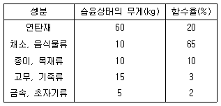
- 70
- 80
- 90
- 100
(정답률: 71%)
16. 쓰레기 수거계획 수립 시 가장 우선되어야 할 항목은?
- 수거빈도
- 수거노선
- 차량의 적재량
- 인부수
(정답률: 82%)
17. 폐기물의 성분을 조사한 결과 플라스틱의 함량이 20%(중량비)로 나타났다. 이 폐기물의 밀도가 300kg/m3이라면 6.5m3 중에 함유된 플라스틱의 양(kg)은?
- 300
- 345
- 390
- 415
(정답률: 74%)
18. pH가 2인 폐산용액은 pH가 4인 폐산용액에 비해 수소이온이 몇 배 더 함유되어 있는가?
- 2배
- 5배
- 10배
- 100배
(정답률: 79%)
19. 폐기물 시료를 축분함에 있어 처음 무게의 1/30~1/35의 무게를 얻고자 한다면 원추4분법을 몇 회 시행하여야 하는가?
- 10회
- 8회
- 6회
- 5회
(정답률: 69%)
20. 직경이 1.0m인 트롬멜 스크린의 최적 속도(rpm)는?
- 약 63
- 약 42
- 약 19
- 약8
(정답률: 62%)
2과목: 폐기물 처리 기술
21. 일반적으로 매립장 침출수 생성에 가장 큰 영향을 미치는 인자는?
- 쓰레기의 함수율
- 지하수의 유입
- 표토를 침투하는 강수
- 쓰레기 분해과정에서 발생하는 발생수
(정답률: 72%)
22. 매립지에서 발생하는 메탄가스는 온실가스로 이산화탄소에 비하여 약 21배의 지구온난화 효과가 있는 것으로 알려져 있어 매립지에서 발생하는 메탄가스를 메탄산화세균을 이용하여 처리하고자 한다. 메탄산화세균에 의한 메탄처리와 관련한 설명 중 틀린 것은?
- 메탄산화세균은 혐기성 미생물이다.
- 메탄산화세균은 자가영양미생물이다.
- 메탄산화세균은 주로 복토층 부근에서 많이 발견된다.
- 메탄은 메탄산화세균에 의해 산화되며, 이산화탄소로 바뀐다.
(정답률: 58%)
23. 매립지에서의 물 수지(water balance)를 고려하여 침출수량을 추정하고자 한다. 강수량을 P, 폐기물 함유수분량을 W, 증발산량을 ET, 유출(run-off)량을 R로 표시하고, 기타항을 무시할 때, 침출수량을 나타내는 식은?
- P - W - ET - R
- W + P - ET + R
- ET + R + P - W
- P + W - ET - R
(정답률: 62%)
24. 폐기물을 중간처리(소각처리)하는 과정에서 얻어지는 결과로 가장 거리가 먼 것은?
- 대체에너지화
- 폐기물 감량화
- 유독물질 안정화
- 대기오염 방지화
(정답률: 69%)
25. 시멘트를 이용한 유해폐기물 고화처리 시 압축강도, 투수계수, 물·시멘트비(water/cement ratio)사이의 관계를 바르게 설명한 것은?
- 물/시멘트비는 투수계수에 영향을 주지 않는다.
- 압축강도와 투수계수 사이는 정비례한다.
- 물/시멘트비가 낮으면 투수계수는 증가한다.
- 물/시멘트비가 높으면 압축강도는 낮아진다.
(정답률: 60%)
26. 연소효율 식으로 옳은 것은? (단, η(%):연소효율, Hi:저위발열량, Lc:미연소 손실, Li:불완전연소 손실)
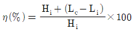
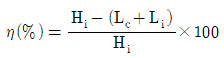
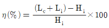
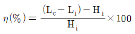
(정답률: 66%)
27. 분뇨처리 최종생성물의 요구조건으로 가장 거리가 먼 것은?
- 위생적으로 안전할 것
- 생화학적으로 분해가 가능할 것
- 최종생성물의 감량화를 기할 것
- 공중 혐오감을 주지 않을 것
(정답률: 56%)
28. 토양증기추출법(SVE)에 대한 설명으로 옳지 않은 것은?
- 생물학적 처리효율을 높여준다.
- 오염물질의 독성은 변화가 없다.
- 총 처리시간을 예측하기가 용이하다.
- 추출된 기체는 대기오염방지를 위해 후처리가 필요하다.
(정답률: 62%)
29. 호기성 퇴비화 공정 설계인자에 대한 설명으로 틀린 것은?
- 퇴비화에 적당한 수분함량은 50~60%로 40% 이하가 되면 분해율이 감소한다.
- 온도는 55~60℃로 유지시켜야 하며 70℃를 적정하게 조절한다.
- C/N비가 20 이하이면 질소가 암모니아로 변하여 pH를 증가시켜 악취를 유발시킨다.
- 산소 요구량은 체적당 20~30%의 산소를 공급하는 것이 좋다.
(정답률: 57%)
30. 점토의 수분함량 지표인 소성지수, 액성한계, 소성한계의 관계로 옳은 것은?
- 소성지수 = 액성한계 - 소성한계
- 소성지수 = 액성한계 + 소성한계
- 소성지수 = 액성한계 / 소성한계
- 소성지수 = 소성한계 / 액성한계
(정답률: 63%)
31. 분뇨를 희석폭기방식으로 처리하려 할 때, 적절한 방법으로 볼 수 없는 것은?
- BOD부하는 1kg/m3·d 이하로 한다.
- 반송슬러지량은 희석된 분뇨량의 50~60%를 표준으로 한다.
- 폭기시간은 12시간 이상으로 한다.
- 조의 유효수심은 3.5~5m를 표준으로 한다.
(정답률: 49%)
32. 아주 적은 양의 유기성 오염물질도 지하수의 산소를 고갈시킬 수 있기 때문에 생물학적 In-situ정화에서는 인위적으로 지하수에 산소를 공급하여야 한다. 이와 같은 산소부족을 해결할 수 있는 대안 공급물질로 가장 적절한 것은?
- 과산화수소
- 이산화탄소
- 에탄올
- 인산염
(정답률: 59%)
33. 매립지 가스에 의한 환경영향이라 볼 수 없는 것은?
- 화재와 폭발
- VOC 용해로 인한 지하수오염
- 충분한 산소제공으로 인한 식물 성장
- 매립가스내 VOC 함유로 인한 건강위해
(정답률: 70%)
34. 다음 물질을 같은 조건하에서 혐기성 처리를 할 때 슬러지 생산량이 가장 많은 것은?
- Lipid
- Protein
- Amino acid
- Carbohydrate
(정답률: 61%)
35. 완전히 건조된 고형분의 비중이 1.3이며, 건조 이전의 슬러지 내 고형분 함량이 42%일 때 건조 이전 슬러지 케익의 비중은?
- 1.042
- 1.107
- 1.132
- 1.163
(정답률: 51%)
36. 매립쓰레기의 혐기성 분해과정을 나타낸 반응식이 아래와 같을 때, 발생가스 중 메탄함유율(발생량 부피%)을 구하는 식(㉢)으로 옳은 것은?
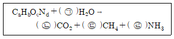
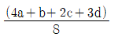
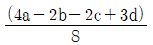
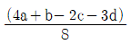
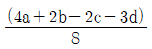
(정답률: 56%)
37. 매립지의 침출수를 혐기성 처리하고자 할 때 장점이 아닌 것은?
- 슬러지 처리 비용이 적어진다.
- 온도에 대한 영향이 거의 없다.
- 고농도의 침출수를 희석 없이 처리할 수 있다.
- 난분해성 물질이 함유된 침출수 처리에 효과적이다.
(정답률: 58%)
38. 대표 화학적 조성이 C7H10O5N2인 폐기물의 C/N비는?
- 2
- 3
- 4
- 5
(정답률: 70%)
39. 수분이 90%인 젖은슬러지를 건조시켜 수분이 20%인 건조슬러지로 만들고자 한다. 젖은슬러지 kg당 생산되는 건조슬러지의 양(kg)은?
- 0.1
- 0.125
- 0.25
- 0.5
(정답률: 61%)
40. 다음 그래프는 쓰레기 매립지에서 발생되는 가스의 성상이 시간에 따라 변하는 과정을 보이고 있다. 곡선(가)과 (나)에 해당하는 가스는?
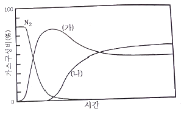
- (가) H2, (나) CH4
- (가) CH4, (나) CH2
- (가) CO2, (나) CH4
- (가) CH4, (나) H2
(정답률: 65%)
3과목: 폐기물 소각 및 열회수
41. 유동층 소각로의 장점으로 거리가 먼 것은?
- 가스의 온도가 낮고 과잉공기량이 적어 NOx도 적게 배출된다.
- 로 내 온도의 자동제어와 열 회수가 용이하다.
- 로 내 내축열량이 높아 투입이나 유동화를 위한 파쇄가 필요 없다.
- 연소효율이 높아 미연소분의 배출이 적고 2차 연소실이 불필요하다.
(정답률: 54%)
42. 연소실의 온도는 850℃ 이상을 유지하면서 연소가스의 체류시간은 2초 이상을 유지하는 것이 좋다고 한다. 그 이유가 아닌 것은?
- 완전연소를 시키기 위해서
- 화격자의 온도를 높이기 위해서
- 연소가스온도를 균일하게 하기 위해서
- 다이옥신 등 유해가스를 분해하기 위해서
(정답률: 50%)
43. 소각로에서 폐기물의 이송방향과 연소가스의 흐름방향이 같은 형식의 구조는?
- 향류식
- 중간류식
- 교류식
- 병류식
(정답률: 66%)
44. 폐기물별 발열량을 짝지어 놓은 것 중 틀린 것은? (단, 단위는 kcal/kg이다.)
- 플라스틱 : 5000~11000
- 도시폐기물 : 1000~4000
- 하수슬러지 : 2000~3500
- 열분해생성가스 : 12000~15000
(정답률: 38%)
45. 아래의 설명에 부합하는 복토방법은?
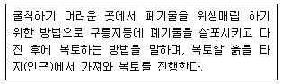
- 도량매립법
- 평지매립법
- 경사매립법
- 개량매립법
(정답률: 47%)
46. 배연탈황법에 대한 설명으로 가장 거리가 먼 것은?
- 활성탄 흡착법에서 SO2는 활성탄 표면에서 산화된 후 수증기와 반응하여 황산으로 고정된다.
- 수산화나트륨의 생성을 억제하기 위해 흡수액의 pH를 7로 조정한다.
- 활성산화망간은 상온에서 SO2 및 O2와 반응하여 황산망간을 생성한다.
- 석회석 슬러리를 이용한 흡수법은 탈황률의 유지 및 스케일 형성을 방지하기 위해 흡수액의 pH를 6으로 조정한다.
(정답률: 50%)
47. 부탄 1000kg을 기화시켜 15Nm3/h의 속도로 연소시킬 때, 부탄이 전부 연소되는데 필요한 시간(h)은? (단, 부탄은 전량 기화된다고 가정한다.)
- 13
- 17
- 26
- 34
(정답률: 44%)
48. 폐열보일러에 1200℃인 연소배가스가 10 Sm3/kg·h의 속도로 공급되어 200℃로 냉각될 때, 보일러 냉각수가 흡수한 열량(kcal/kg·h)은? (단, 보일러 내의 열손실은 없으며, 배가스의 평균정압비열은 1.2kcal/Sm3·℃으로 가정한다.)
- 1.2×104
- 1.6×104
- 2.2×104
- 2.6×104
(정답률: 54%)
49. 폐수처리 슬러지를 연소하기 위한 전처리에 대한 설명 중 틀린 것은?
- 수분을 제거하고 고형물의 농도를 낮춘다.
- 통상적인 탈수 케이크보다 더 높은 탈수 케이크를 만드는 것이 필요하다.
- 탈수 효율이 낮을수록 연소로에서는 더 많은 연료가 필요하게 된다.
- 탈수가 효율적으로 수행되면 연료비가 향상되어 최대 슬러지의 처리용량을 얻을 수 있다.
(정답률: 46%)
50. 연소과정에서 발생하는 질소산화물 중 Fuel NOx 저감 효과가 가장 높은 방법은?
- 연소실에서 수증기를 주입한다.
- 이단연소에 의해 연소시킨다.
- 연소실 내 산소 농도를 낮게 유지한다.
- 연소용 공기의 예열온도를 낮게 유지한다.
(정답률: 47%)
51. 액화분무소각로(Liquid Injection Incinerator)의 특징으로 가장 거리가 먼 것은?
- 광범위한 종류의 액상폐기물 소각에 이용 가능하다.
- 구동장치가 없어 고장이 적다.
- 소각재의 처리설비가 필요 없다.
- 충분한 연소로 로 내 내화물의 파손이 적다.
(정답률: 37%)
52. 연소실과 열부하에 대한 설명 중 옳은 것은?
- 열부하는 설계된 연소실 체적의 적절함을 판단하는 기준이 된다.
- 폐기물의 고위발열량을 기준으로 산정한다.
- 열부하가 너무 작으면 미연분, 다이옥신 등이 발생한다.
- 연소실 설계 시 회분(batch) 연소식은 연속 연소식에 비해 열부하를 크게하여 설계한다.
(정답률: 38%)
53. 에틸렌(C2H4)의 고위발열량이 15280 kcal/Sm3 이라면 저위발열량(kcal/Sm3)은?
- 14320
- 14680
- 14800
- 14920
(정답률: 57%)
54. 폐기물 열분해 시 생성되는 물질로 가장 거리가 먼 것은?
- char/ter
- 방향성 물질
- 식초산
- NOx
(정답률: 47%)
55. 소각로나 보일러에서 열정산 시 출열(出熱) 항목에 포함되지 않는 것은?
- 축열 손실
- 방열 손실
- 배기 손실
- 증기 손실
(정답률: 40%)
56. 소각로의 연소효율을 향상시키는 대책으로 틀린 것은?
- 간헐운전 시 전열효율 향상에 의한 승온시간 연장
- 열작감량을 작게 하여 완전연소화
- 복사전열에 의한 방열손실 감소
- 최종 배출가스 온도 저감 도모
(정답률: 49%)
57. 열분해 공정에 대한 설명으로 가장 거리가 먼 것은?
- 산소가 없는 상태에서 열에 의해 유기성물질을 분해와 응축반응을 거쳐 기체, 액체, 고체상 물질로 분리한다.
- 가스상 주요 생성물로는 수소, 메탄, 일산화탄소 그리고 대상물질 특성에 따른 가스성분들이 있다.
- 수분함량이 높은 폐기물의 경우에 열분해효율 저하와 에너지 소비량 증가 문제를 일으킨다.
- 연소 가스화 공정이 높은 흡열반응인데 비하여 열분해 공정은 외부 열원이 필요한 발열반응이다.
(정답률: 56%)
58. 저위발열량이 9000 kcal/Sm3인 가스연료의 이론연소온도(℃)는? (단, 이론연소가스량은 10Sm3/Sm3, 기준온도는 15℃, 연료연소가스의 정압비열은 0.35kcal/Sm3·℃로 한다.)
- 1008
- 1293
- 2015
- 2586
(정답률: 52%)
59. 다음 기체를 각각 1Sm3씩 연소하는데 필요한 이론 산소량이 가장 많은 것은? (단, 동일 조건임)
- C2H6
- C3H8
- CO
- H2
(정답률: 59%)
60. 주성분이 C10H17O6N인 슬러지 폐기물을 소각처리 하고자 한다. 폐기물 5kg 소각에 이론적으로 필요한 산소의 질량(kg)은? (문제 오류로 가답안 발표시 3번으로 발표되었지만 확정 답안 발표시 모두 정답처리 되었습니다. 여기서는 가답안인 3번을 누르면 정답 처리 됩니다.)
- 21
- 26
- 32
- 38
(정답률: 56%)
4과목: 폐기물 공정시험기준(방법)
61. 자외선/가시선 분광법으로 시안을 분석할 때 간섭물질을 제거하는 방법으로 옳지 않은 것은?
- 시안화합물을 측정할 때 방해물질들을 증류하면 대부분 제거된다. 그러나 다량의 지방성분, 잔류염소, 황화합물은 시안화합물을 분석할 때 간섭할 수 있다.
- 황화합물이 함유된 시료는 아세트산아연 용액(10W/V%) 2mL를 넣어 제거한다.
- 다량의 지방성분을 함유한 시료는 아세트산 또는 수산화나트륨 용액으로 pH 6~7로 조절한 후 노말헥산 또는 클로로폼을 넣어 추출하여 수층은 버리고 유기물층을 분리하여 사용한다.
- 잔류염소가 함유된 시료는 잔류염소 20mg당 L-아스코빈산(10W/V%) 0.6mL 또는 이산화비소산나트륨용액(10W/V%) 0.7mL를 넣어 제거한다.
(정답률: 48%)
62. 용출시험방법에 관한 설명으로 ( )에 옳은 내용은?
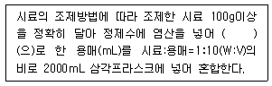
- pH 4 이하
- pH 4.3~5.8
- pH 5.8~6.3
- pH 6.3~7.2
(정답률: 63%)
63. 석면(X선 회절기법) 측정을 위한 분석절차 중 시료의 균일화에 관한 내용(기준)으로 ( )에 옳은 것은?
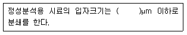
- 0.1
- 1.0
- 10
- 100
(정답률: 41%)
64. 용매추출 후 기체크로마토그래피를 이용하여 휘발성 저급염소화 탄화수소류 분석 시 가장 적합한 물질은?
- Dioxin
- Polychlorinated biphenyls
- Trichloroethylene
- Polyvinylchoride
(정답률: 48%)
65. pH 표준용액 조제에 관한 설명으로 옳지 않은 것은?
- 조제한 pH 표준용액은 경질유리병 또는 폴리에틸렌병에 보관한다.
- 염기성 표준용액은 산화칼슘 흡수관을 부착하여 1개월 이내에 사용한다.
- 현재 국내외에 상품화되어 있는 표준용액을 사용할 수 있다.
- pH 표준용액용 정제수는 묽은 염산을 주입한 후 증류하여 사용한다.
(정답률: 47%)
66. 용출시험방법의 용출조작에 관한 내용으로 ( )에 옳은 내용은?
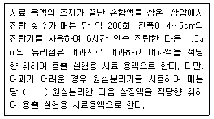
- 2000회전 이상으로 20분 이상
- 2000회전 이상으로 30분 이상
- 3000회전 이상으로 20분 이상
- 3000회전 이상으로 30분 이상
(정답률: 51%)
67. 다음의 실험 총칙에 관한 내용 중 틀린 것은?
- 연속측정 또는 현장측정의 목적으로 사용하는 측정기기는 공정시험기준에 의한 측정치와의 정확한 보정을 행한 후 사용할 수 있다.
- 분석용 저울은 0.1mg까지 달 수 있는 것이어야 하며 분석용 저울 및 분동은 국가 검정을 필한 것을 사용하여야 한다.
- 공정시험기준에 각 항목의 분석에 사용되는 표준물질은 특급시약으로 제조하여야 한다.
- 시험에 사용하는 시약은 따로 규정이 없는 한 1급 이상의 시약 또는 동등한 규격의 시약을 사용하여 각 시험항목별 ‘시약 및 표준용액’에 따라 조제하여야 한다.
(정답률: 54%)
68. 단색광이 임의의 시료용액을 통과할 때 그 빛의 80%가 흡수되었다면 흡광도는?
- 약 0.5
- 약 0.6
- 약 0.7
- 약 0.8
(정답률: 56%)
69. 구리(자외선/가시선 분광법 기준) 측정에 관한 내용으로 ( )에 옳은 내용은?
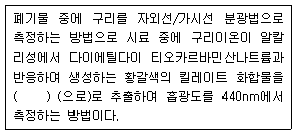
- 아세트산부틸
- 사염화탄소
- 벤젠
- 노말헥산
(정답률: 41%)
70. 용출시험방법의 적용에 관한 사항으로 ( )에 옳은 내용은?
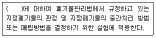
- 수거 폐기물
- 고상 폐기물
- 일반 폐기물
- 고상 및 반고상 폐기물
(정답률: 52%)
71. 시료의 조제방법으로 옳지 않은 것은?
- 돌멩이 등의 이물질을 제거하고, 입경이 5mm 이상인 것은 분쇄하여 체로 거른 후 입경이 0.5~5mm로 한다.
- 시료의 축소방법으로 구획법, 교호삽법, 원추4분법이 있다.
- 원추4분법을 3회 시행하면 원래 양의 1/3이 된다.
- 시료의 분할 채취 방법에 따라 시료의 조성을 균일화 한다.
(정답률: 57%)
72. 유리전극법을 이용하여 수소이온농도를 측정할 때 적용범위 기준으로 옳은 것은?
- pH를 0.01 까지 측정한다.
- pH를 0.⑤ 까지 측정한다.
- pH를 0.1 까지 측정한다.
- pH를 0.5 까지 측정한다.
(정답률: 46%)
73. 유기인화합물 및 유기질소화합물을 선택적으로 검출할 수 있는 기체크로마토그래피 검출기는?
- TCD
- FID
- ECD
- FPD
(정답률: 50%)
74. 음식물 폐기물의 수분을 측정하기 위해 실험하였더니 다음과 같은 결과를 얻었을 때 수분(%)은? (단, 건조 전 시료의 무게 = 50kg, 증발접시의 무게 = 7.25g, 증발접시 및 시료의 건조 후 무게 = 15.75g)
- 87
- 83
- 78
- 74
(정답률: 53%)
75. 노말헥산 추출물질을 측정하기 위해 시료 30g을 사용하여 공정시험기준에 따라 실험하였다. 실험전후의 증발용기의 무게 차는 0.0176g이고 바탕 실험전후의 증발용기의 물게 차가 0.0011g이었다면 이를 적용하여 계산된 노말헥산 추출물질(%)은?
- 0.035
- 0.⑤5
- 0.075
- 0.095
(정답률: 51%)
76. 다음 중 농도가 가장 낮은 것은?
- 수산화나트륨(1 → 10)
- 수산화나트륨(1 → 20)
- 수산화나트륨(5 → 100)
- 수산화나트륨(3 → 100)
(정답률: 54%)
77. PCBs(기체크로마토그래픽-질량분석법)분석 시 PCBs 정량한계(mg/L)는?
- 0.001
- 0.⑤
- 0.1
- 1.0
(정답률: 20%)
78. 기체크로마토그래피의 장치구성의 순서로 옳은 것은?
- 운반가스 - 유량계 - 시료도입부 - 분리관 - 검출기 -기록부
- 운반가스 - 시료도입부 - 유량계 - 분리관 - 검출기 -기록부
- 운반가스 - 유량계 - 시료도입부 - 광원부 - 검출기 -기록부
- 운반가스 - 시료도입부 - 유량계 - 광원부 - 검출기 -기록부
(정답률: 35%)
79. 폐기물시료의 강열감량을 측정한 결과가 다음과 같을 때 해당시료의 강열감량(%)은? (단, 도가니의 무게(w1) = 51.045g, 강열 전 도가니와 시료의 무게(w2) = 92.345g, 강열 후 도가니와 시료의 무게(w3) = 53.125g)
- 약 93
- 약 95
- 약 97
- 약 99
(정답률: 48%)
80. 자외선/가시선 분광법에서 램버어트 비어의 법칙을 올바르게 나타내는 식은? (단, Io = 입사강도, It = 투과강도, ℓ = 셀의 두께, ε = 상수, C = 농도)
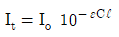
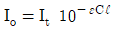
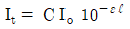
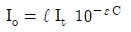
(정답률: 57%)
5과목: 폐기물 관계 법규
81. 과징금 부과에 대한 설명으로 ( )에 알맞은 것은?
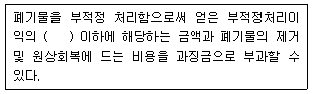
- 1.5배
- 2배
- 2.5배
- 3배
(정답률: 27%)
82. 폐기물 중간처분시설에 관한 설명으로 옳지 않은 것은?
- 용융시설(동력 7.5kW 이상인시설로 한정한다.)
- 압축시설(동력 7.5kW 이상인 시설로 한정한다.)
- 파쇄·분쇄 시설(동력 7.5kW 이상인 시설로 한정한다.)
- 절단시설(동력 7.5kW 이상인 시설로 한정한다.)
(정답률: 43%)
83. 폐기물처리시설 주변지역 영향조사 기준에 관한 내용으로 ( )에 알맞은 것은?
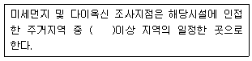
- 2개소
- 3개소
- 4개소
- 6개소
(정답률: 46%)
84. 폐기물 처분시설 또는 재활용시설의 설치기준에서 고온소각시설의 설치기준으로 옳지 않은 것은?
- 2차 연소실의 출구온도는 섭씨 1100도 이상이어야 한다.
- 2차 연소실은 연소가스가 2초 이상 체류할 수 있고 충분하게 혼합될 수 있는 구조이어야 한다.
- 배출되는 바닥재의 강열감량이 3퍼센트 이하가 될 수 있는 소각 성능을 갖추어야한다.
- 1차 연소실에 접속된 2차 연소실을 갖춘 구조이어야 한다.
(정답률: 44%)
85. 폐기물 발생 억제 지침 준수의무 대상 배출자의 업종에 해당하지 않는 것은?
- 금속가공제품 제조업(기계 및 가구 제외)
- 연료제품 제조업(핵연료 제조 제외)
- 자동차 및 트레일러 제조업
- 전기장비 제조업
(정답률: 39%)
86. 국가환경종합계획의 수립 주기로 옳은 것은?
- 5년
- 10년
- 15년
- 20년
(정답률: 46%)
87. 관리형 매립시설에서 발생하는 침출수에 대한 부유물질량의 배출허용기준은? (단, 물환경보전법 시행규칙의 나지역 기준)
- 50mg/L
- 70mg/L
- 100mg/L
- 150mg/L
(정답률: 42%)
88. 의료폐기물을 제외한 지정폐기물의 수집·운반에 관한 기준 및 방법으로 적합하지 않은 것은?
- 분진·폐농약·폐석멱 중 알갱이 상태의 것은 흩날리지 아니하도록 폴리에틸렌이나 이와 비슷한 재질의 포대에 담아 수집·운반 하여야 한다.
- 액체상태의 지정폐기물을 수집·운반하는 경우에는 흘러나올 우려가 없는 전용의 탱크·용기·파이프 또는 이와 비슷한 설비를 사용하고, 혼합이나 유동으로 생기는 위험이 없도록 하여야 한다.
- 지정폐기물 수집·운반차량(임시로 사용하는 운반차량을 포함)은 차체를 흰색으로 도색하여야 한다.
- 지정폐기물의 수집·운반차량 적재함의 양쪽 옆면에는 지정폐기물 수집·운반차량, 회사명 및 전화번호를 잘 알아 볼 수 있도록 붙이거나 표기하여야 한다.
(정답률: 55%)
89. 폐기물처리 신고를 하고 폐기물을 재활용할 수 있는 자에 관한 기준으로 ( )에 알맞은 것은?
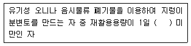
- 1톤
- 3톤
- 5톤
- 10톤
(정답률: 44%)
90. 기술관리인을 두어야 할 폐기물처리시설이 아닌 것은?
- 시간당 처분능력이 120킬로그램인 의료폐기물 대상 소각시설
- 면적이 4천 제곱미터인 지정폐기물 매립시설
- 전단시설로서 1일 처분능력이 200톤인 시설
- 연료화시설로서 1일 처분능력이 7톤인 시설
(정답률: 43%)
91. 폐기물관리법에서 사용되는 용어로 정의로 옳지 않은 것은?
- 처분이란 폐기물의 소각·중화·파쇄·고형화 등의 중간처분과 매립하거나 해역으로 배출하는 등의 최종처분을 말한다.
- 폐기물처리시설이란 생산 공정에서 발생하는 폐기물의 양을 줄이고, 사업장 내 재활용을 통하여 폐기물을 최종처분 하는 시선을 말한다.
- 폐기물이란 쓰레기, 연소재, 오니, 폐유, 폐산, 폐알칼리 및 동물의 사체 등으로서 사람의 생활이나 사업활동에 필요하지 아니하게 된 물질을 말한다.
- 생활폐기물이란 사업장폐기물 외의 폐기물을 말한다.
(정답률: 45%)
92. 지정폐기물의 종류 및 유해물질함유 폐기물로 옳은 것은? (단, 환경부령으로 정하는 물질을 함유한 것으로 한정한다.)
- 광재(철광 원석의 사용으로 인한 고로슬래그를 포함한다.)
- 폐흡착제 및 폐흡수제(광물유·동물유의 정제에 사용된 폐토사는 제외한다.)
- 분진(소각시설에서 발생되는 것으로 한정하되, 대기오염 방지시설에서 포집된 것은 제외한다.)
- 폐내화물 및 재벌구이 전에 유약을 바른 도자기 조각
(정답률: 29%)
93. 위해의료폐기물 중 손상성폐기물과 거리가 먼 것은?
- 일회용 주사기
- 수술용 칼날
- 봉합바늘
- 한방침
(정답률: 35%)
94. 폐기물 처분시설 또는 재활용시설 중 의료폐기물을 대상으로 하는 시설의 기술관리인 자격기준에 해당하지 않는 자격은?
- 수질환경산업기사
- 폐기물처리산업기사
- 임상병리사
- 위생사
(정답률: 34%)
95. 폐기물 관리의 기본원칙과 거리가 먼 것은?
- 폐기물은 중간처리보다는 소각 및 매립의 최종처리를 우선하여 비용과 유해성을 최소화 하여야 한다.
- 폐기물로 인하여 환경오염을 일으킨 자는 오염된 환경을 복원할 책임을 지며, 오염으로 인한 피해의 구제에 드는 비용을 부담하여야 한다.
- 국내에서 발생한 폐기물은 가능하면 국내에서 처리되어야 하고, 폐기물의 수입은 되도록 억제되어야 한다.
- 누구든지 폐기물을 배출하는 경우에는 주변환경이나 주민의 건강에 위해를 끼치지 아니하도록 사전에 적절한 조치를 하여야 한다.
(정답률: 48%)
96. 폐기물처리업 업종구분과 영업내용의 범위를 벗어나는 영업을 한 자에 대한 벌칙기준은?
- 5년 이하의 징역 또는 5천만원 이하의 벌금
- 3년 이하의 징역 또는 3천만원 이하의 벌금
- 2년 이하의 징역 또는 2천만원 이하의 벌금
- 1천만원 이하의 과태료
(정답률: 39%)
97. 주변지역 영향 조사대상 폐기물처리시설에서 폐기물처리업자 설치·운영하는 사업장 지정폐기물 매립시설의 매립면적에 대한 기준으로 옳은 것은?
- 매립면적 1만 제곱미터 이상
- 매립면적 2만 제곱미터 이상
- 매립면적 3만 제곱미터 이상
- 매립면적 5만 제곱미터 이상
(정답률: 51%)
98. 폐기물처리업의 허가를 받을 수 없는 자에 대한 기준으로 틀린 것은?
- 폐기물처리업의 허가가 취소된 자로서 그 허가가 취소된 날부터 10년이 지나지 아니한 자
- 파산선고를 받고 복권되지 아니한 자
- 폐기물관리법을 위반하여 금고 이상의 형의 집행유예를 선고받고 그 집행유예 기간이 끝난 날부터 5년이 지나지 아니한 자
- 폐기물관리법 외의 법을 위반하여 금고 이상의 형을 선고받고 그 형의 집행이 끝난 날부터 2년이 지나지 아니한 자
(정답률: 42%)
99. 사업장폐기물을 배출하는 사업자가 지켜야 할 사항에 대한 설명으로 옳지 않은 것은?
- 사업장에서 발생하는 폐기물 중 유해물질의 함유량에 따라 지정폐기물로 분류될 수 있는 폐기물에 대해서는 폐기물분석전문기관에 의뢰하여 지정폐기물에 해당되는지를 미리 확인하여야 한다.
- 사업장에서 발생하는 모든 폐기물을 폐기물의 처리 기준과 방법 및 폐기물의 재활용 원칙 및 준수사항에 적합하게 처리하여야 한다.
- 생산 공정에서는 폐기물감량화시설의 설치, 기술개발 및 재활용 등의 방법으로 사업장폐기물의 발생을 최대한으로 억제하여야 한다.
- 사업장폐기물배출자는 발생된 폐기물을 최대한 신속하게 직접 처리하여야 한다.
(정답률: 47%)
100. 액체상태의 것은 고온소각하거나 고온용융 처리하고, 고체상태의 것은 고온소각 또는 고온용융처리하거나 차단형 매립시설에 매립하여야 하는 것은?
- 폐농약
- 폐촉매
- 폐주물사
- 광재
(정답률: 33%)